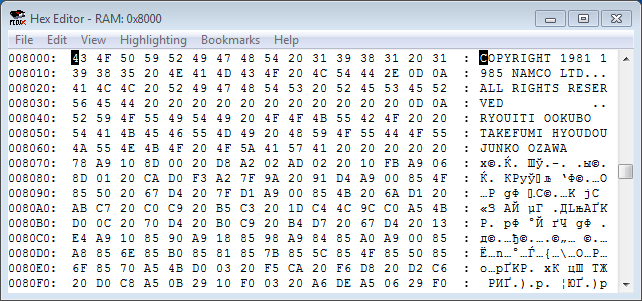
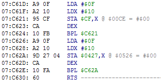
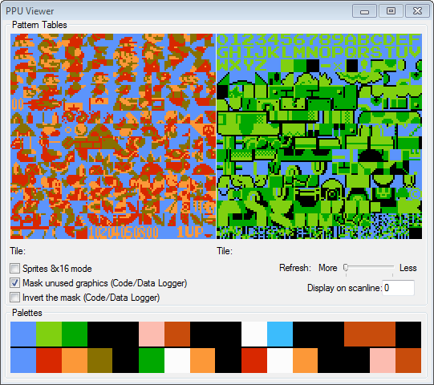
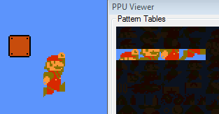
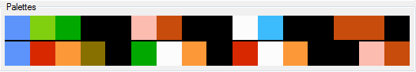

Введение в ромхакинг NES
Вернуться на главную страницу
Содержание
Введение в ромхакинг NES
Nintendo Entertainment System
Для эмуляции игр NES существуют множество эмуляторов, например Nestopia, FCEUX, Mednafen и другие. Эмулятор игровой консоли эмулирует ее различные компоненты, такие как центральный процессор, видеопроцессор и аудиопроцессор.
Чтобы поиграть в какую-то игру, нужно найти ROM (образ) этой игры. ROM содержит в себе копию данных с микросхемы картриджа.
Игры могут отличаться по размеру программы PRG (Program) и графики CHR (Character), а также по другим параметрам, например по номеру маппера (устройство управления расширенной памятью). Чтобы эмулятор мог правильно эмулировать данный ROM, в начале каждого файла есть специальная строчка из 16 байт, называемая "хедер" (header).
Строчки с хедером нету в памяти картриджа, она была придумана для эмуляторов.
Эмулятор FCEUX
Данный эмулятор не только эмулирует игру, но еще позволяет отображать ее "внутренности", например оперативную память (RAM), видеопамять и графику. В нем также есть инструменты для отладки и редактирования кода, и еще много чего полезного для ромхакинга.
Выбери опцию из списка, чтобы почитать базовую информацию по NES.
| CPU |
RAM |
PRG ROM |
Программирование на NES |
PPU |
Тайловая графика |
APU |
Центральный процессор
Центральным процессором (CPU) является 8-битный микропроцессор на основе MOS Technology 6502.
Размер памяти процессора = 64 KB. Каждая ячейка памяти называется "адрес", в каждом адресе хранится 1 байт. В статьях адреса будут записаны четырьмя символами с префиксом "$".
64 KB = диапазон адресов $0000-$FFFF. У процессора 16-битная адресная шина, что позволяет ему обращаться к любому адресу этого диапазона.

Память разбита на несколько участков. Самыми примечательными являются RAM и PRG ROM. Остальные адреса это зеркала RAM, память батарейки (при ее наличии) и различные регистры (включая их зеркала).
RAM
Оперативная память размером 2 KB, она находится в диапазоне $0000-$07FF. RAM служит для хранения динамических данных игрового процесса, таких как количество жизней, координаты объектов, номер уровня, таймеры и прочее. Обычно адрес RAM хранит в себе числовое количество чего-либо.

Каждый отдельный адрес из этих 2048-ми адресов может отвечать за какую-то определенную задачу, или же просто быть свободным (который совсем не используется игрой). Некоторые схожие адреса, например координаты объектов, очень часто находятся по соседству.
Только разработчики игры решают за что будет отвечать каждый из этих адресов, и скорее всего адрес, который отвечает за какую-то функцию, в другой игре будет находиться в совершенно другом месте. Схожее расположение адресов в лучшем случае ты встретишь у игр одной серии, или в играх одной и той же компании.
Несмотря на такое большое количество адресов, найти нужный адрес, который отвечает за определенную игровую функцию, не так уж и сложно.
Чтобы внести в игру некие изменения, нужно повлиять на адрес, который отвечает за соответствующую игровую функцию. Свободные адреса можно использовать самому для хранения каких-то новых динамических данных.
PRG ROM
Программа (PRG) размером 32 KB в диапазоне $8000-$FFFF. Здесь размещен код и игровые данные, например текст, таблица уровней, параметры персонажей и другие. Большинство статических данных и констант будут храниться именно здесь. Динамические данные находятся в адресах RAM.

Дополнительная память
Крупным играм недостаточно 32 KB памяти, и тогда на помощь приходит маппер. Он позволяет подключать в эту область различные "банки" памяти из файла ROM'а, таким образом в том же диапазоне $8000-$FFFF в другой момент времени может мгновенно оказаться совершенно иной код с данными.
Возможность, метод переключения банков памяти и их размер зависят от маппера.
Обычно массивные игровые программы, такие как отрисовка графики, вычисление физики, музыкальный движок и другие, находятся в отдельных банках и подключаются на протяжении кадра в том порядке, в котором запрограммирован основной игровой скрипт.
Программирование на NES
Игры для NES написаны на языке ассемблера процессора 6502. Это низкоуровневый язык программирования, в котором программа является байт-кодом. Эти байты интерпретируются как набор инструкций.

Предназначение данной подпрограммы - записать байт #$0F по адресам $00CF-$00DF и $0427-$0437.
Начало кода
Точкой входа в программу (игру) является 16-битный адрес, младший и старший байт которого указаны в $FFFC-$FFFD. Затем происходит базовая загрузка игры, такая как отрисовка различных игровых экранов и заставок. Дальнейшие игровые события развиваются благодаря нажатию кнопок на джойстике.
Редактируя код игры, можно изменять геймплей и игровые данные. Для этого требуется знание инструкций и регистров процессора.
PPU
Центральный процессор общается с видеопроцессором (PPU) при помощи регистров. В регистры передается старший и младший байты адреса для чтения/записи байтов видеопамяти, позиция скроллинга, включение/отключение графики и прочее.
Редактирование графики
Для редактирования тайлов (графики NES) обычно используются универсальные тайловые редакторы вроде YY-CHR. Менять палитру не составляет труда. С редактированием титульных экранов иногда нужно повозиться.
Для некоторых популярных игр существуют специализированные редакторы, позволяющие не только менять графику, но также конструировать уровни, изменять расположение врагов и прочее.
Тайловая графика
Графика NES состоит из тайлов. Тайл - изображение размером 8x8 пикселей.

Часть графики предназначена для фона, а часть для спрайтов (изображений поверх фона).
Отображение на экране
Игра комбинирует различные тайлы, располагает их на экране в нужном месте, и в итоге получается привычная нам картинка. Например, для анимации прыжка Марио используются 8 тайлов, которые выводятся на экране как спрайты.

Дополнительные тайлы
Если игре понадобятся новые наборы тайлов, например для отображения логотипа, алфавита, новых видов врагов и так далее, она может подключить в видеопамять другую область с тайлами вместо одной из текущих, или же вручную перерисовать некоторые тайлы на другие.
Как и в случае с банками PRG, возможность, метод переключения банков CHR (графики) и их размер зависят от маппера.
Палитра
Для фона и для спрайтов выделено по 4 набора цветов, в каждом наборе по 3 уникальных цвета + 1 цвет фона.

Память спрайтов содержит информацию о том, какой номер палитры будет использован каждым отдельным спрайтом. Фон указывает палитру для своих тайлов сразу для размера 16x16 пикселей (4 тайла).
APU
Центральный процессор общается с аудиопроцессором (APU) при помощи регистров. В регистры передается информация о нотах, длительности звука, громкости и прочее.
Музыка
Всего есть 5 музыкальных каналов, которые генерируют звуковые сигналы, и в итоге получается звук/музыка.
На некоторых мапперах, например MMC5 и VRC6, больше возможностей аудиопроцессора.
Редактирование музыки
Редактирование музыки является самым сложным видом ромхакинга, поскольку в играх не существует какого-то единого формата хранения данных музыки. Звуковой движок везде отличается, и разобраться в нем может быть непросто даже для опытного ромхакера.
Свою музыку можно написать при помощи программы Famitracker.